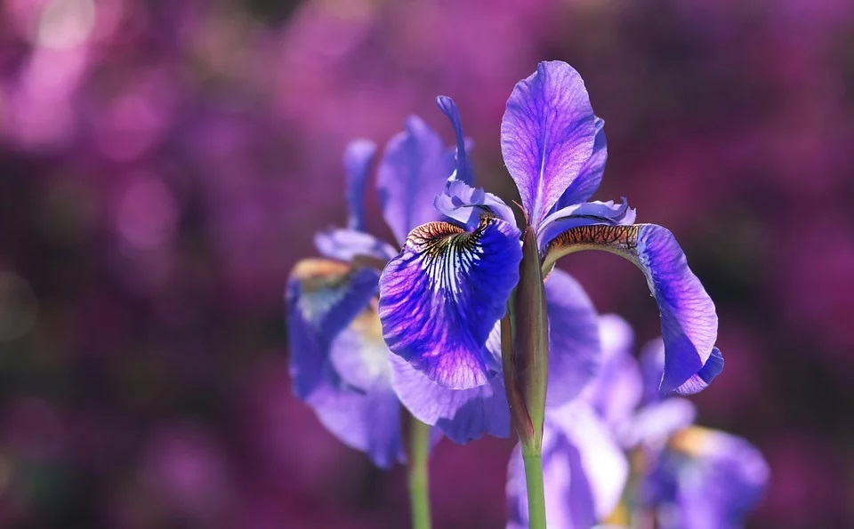

Autorka této stránky, která za úkol dostala vtvořit webovou stránku o sobě. Tedy já. Shrnutí se často označují jako cosi v kostce. Znáte to: "Dějepis v kostce", "Fyzika v kostce"... A jako má "kostka" šest stěn, představuji zde šest svých rolí a vlastností, které jsou důležité pro moji maličkost.
Jsem:
Často to není poznat, ale jsem. Posezení s jednou nebo dvěma kamarádkami je vždycky lepší než party ve sto lidech. A nerada mluvím před lidmi, i když jsou daleko za svými obrazovkami. Když jsem se měla při úvodní lekci kurzu představit, vyletěl mi tep, prorazil strop a srážet ho museli až sousedé bydlící v bytě tři patra nad námi.
Od dob, kdy jsem ještě číst neuměla, ale dokázala jsem po paměti bezchybně vykládat z knihy, kterou jsem samozřejmě držela vzhůru nohama, až do teď mi knihy poskytují neskonalý rozlet a zároveň bezpečné útočiště. Dá se s nimi zažít prostě cokoli. Věděli jste, že Valentýn je zároveň i mezinárodním dnem darování knih? Tak taková je to láska!
Je až obtěžující, kolik rozličných témat mě dokáže zaujmout a nadchnout. Nejde přitom o sbírání titulů, certifikátů a jiných bludišťáků, ale čistě o radost z poznávání a učení se (všechny zkoušky okolo jsou bohužel demotivující otrava).
Krizový management? - To zní fakt dobře. Nezvládla bych studovat tři obory najednou?
On-line kurzy astronomie? – Už se zapisuju.
Moderní kaligrafie? – Frčím tam!
Ony existují kurzy sokolnictví? – Tak to je jasné. Budu sokolníkem!
A tak pořád dál a dál. Kdyby existovala profese, během které člověk studuje jednu školu za druhou a vrší kurz na kurz, byla by to nejspíš moje vysněná.
Ve Finsku jsem během studia strávila jeden rok a byl to jeden z nejhezčích a nejspokojenějších roků v mém životě. Krásná, čistá příroda, bydlení dvě minuty od obrovského jezera, v zimě sobi, polární záře a dech srážející se při mrazivých procházkách na vlasech a na řasách. V létě nekončící bílé noci, během kterých se vůbec nechce spát a dá se toho tolik stihnout. A finština. Hlavně ta finština – celoživotní výzva, kterou zcela jistě jednou pokořím!
Na tuhle roli bohužel poslední dobou dost padá prach, ale doufám, že ji časem oživím. V šestnácti jsem začala s orientálním tancem a i přes krátké aférky s jinými tanečními styly (contemporary, balet, bollywood, step) mi právě orient vydržel až do dospělosti. Hodně mě baví kombinovat, fúzovat a zapojovat různé rekvizity – závoje, svíčky, křídla Isis a hlavně mé oblíbené hedvábné vějíře.
Už skoro šestnáct měsíců se starám o malého špunta. Ještě než se človíček narodil a my uvažovali o jméně, chtěla jsem ho pojmenovat po sobě. Naštěstí děťátko vědělo, co je pro ně dobré, a tak se nenarodil chlapeček Hyacint ani Narcis, ale holčička. Postupně jsme zavrhli jména Jasmínka, Růženka i Jiřinka a nakonec si doma pěstujeme báječnou malou Iris. Její fotku si nechám pro sebe a rozloučím se s vámi alespoň obrázkem kosatce (irisu).
